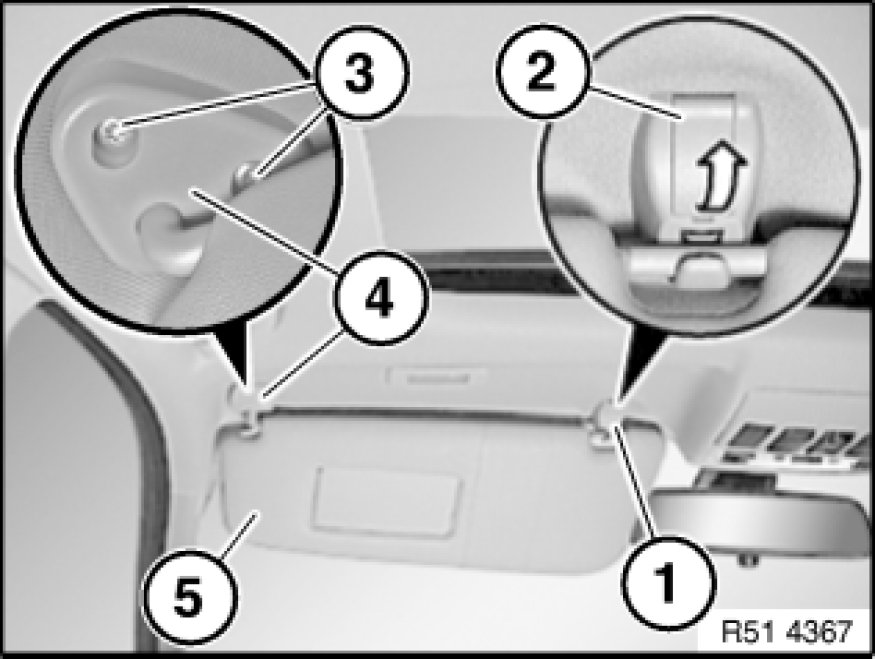
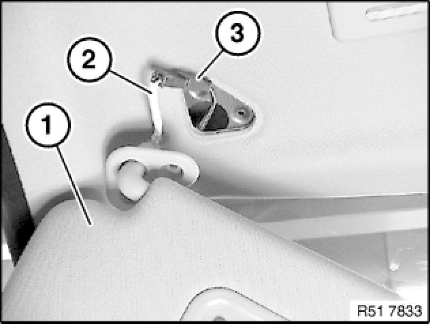

Sun Visor: Service and Repair
51 16 080 - Removing and installing or replacing sun visor and left or right counter support

Note:
The operation is shown on the left side; proceed in the same way for the right side.
Fold down sun visor (5).
Lever out trim (2) on counter support (1) and release screw underneath.
Release screws (3) on holder (4).

Lift out sun visor (1).
If necessary, pull out cable (2) slightly and disconnect plug connection (3).
Installation:
Perform function check on lighting.